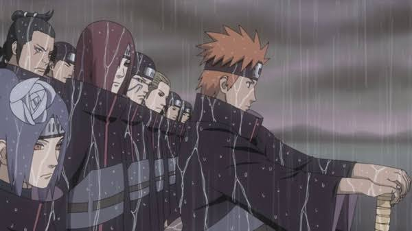

Primeira formação da Akatsuki liderada por Yahiko na Vila Oculta da Chuva.
A Akatsuki foi fundada durante a Terceira Grande Guerra Mundial Shinobi pelos órfãos da Vila Oculta da Chuva (Amegakure): Yahiko, Nagato e Konan. O objetivo inicial do grupo era alcançar a paz e proteger sua vila da devastação causada pelas grandes nações, utilizando o diálogo e a cooperação, sem recorrer à violência desnecessária.
Liderada pelo idealismo de Yahiko, a organização rapidamente conquistou apoio e cresceu. No entanto, o líder de Amegakure, Hanzō da Salamandra, passou a ver o grupo como uma ameaça ao seu poder. Em uma emboscada articulada por Hanzō em aliança com Danzō Shimura, Yahiko sacrificou sua própria vida para garantir a sobrevivência de Konan e Nagato.
A dor devastadora da perda de Yahiko fez despertar os plenos poderes do Rinnegan de Nagato. A partir desse evento trágico, Nagato assumiu a identidade de Pain e redefiniu a missão da Akatsuki: criar a paz mundial não mais pela diplomacia, mas fazendo o mundo vivenciar uma dor tão profunda que as guerras se tornariam insustentáveis.